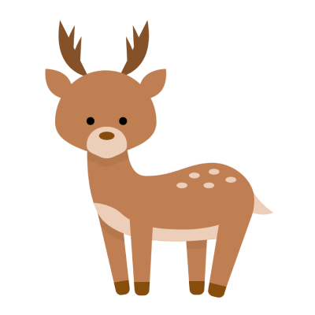
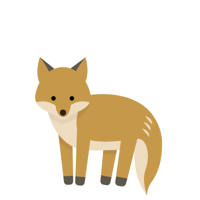
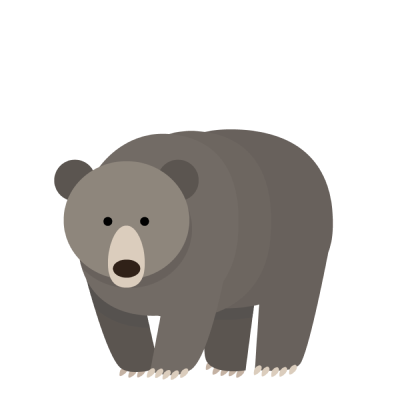
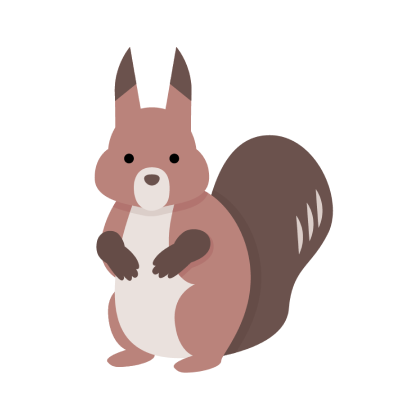
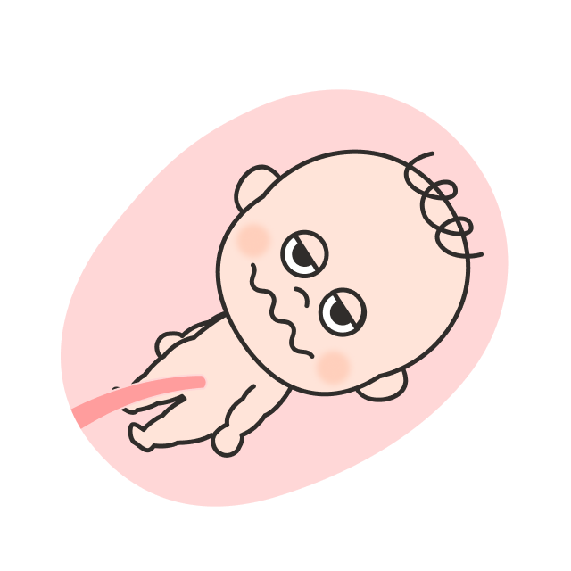
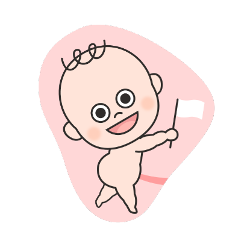
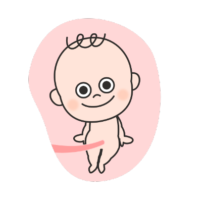

Front End Developer フロントエンドエンジニア
About me
I'm from Aichi and live in Tokyo. I studied topology and 3DCG animation in college.
Since 2015, as a web designer and front-end developer in a business company, I was mainly involved in the new development of owned media. At the same time, I got a degree in art while working. From 2019, I have engaged design and operation of art work exhibitions, planning and editing web contents in the e-commerce site management company for contemporary art. Then I became a freelancer in 2021.
愛知県生まれ、東京都在住。
大学時代に位相幾何学と3DCGアニメーションを学ぶ。2015年より事業会社のWEBデザイナー・フロントエンドエンジニアとして、主にオウンドメディアの新規開発に携わる。働きながら芸術の学位を取得し、2019年に現代アートのECサイト運営会社へ転職。作品展示の設計・運営やWEBコンテンツの企画・編集に従事した後、2021年にフリーランスとして独立。
Skills
These are the main skills and experiences I use to create websites.
WEBサイト制作に使用している主なスキルと経験値です。
-
HTML5 / CSS390%
-
JavaScript / ES1190%
-
Vue.js80%
-
TypeScript60%
-
ReactNative / Redux50%
-
Wordpress / Shopify70%
-
Figma60%
Works
These are my main jobs. After having front-end development works for some of owned media, I am currently creating corporate sites and e-commerce sites.
これまでの主な仕事です。オウンドメディアのフロントエンド開発を経て、現在は企業のコーポレイトサイトやECサイトを制作しています。
-
2023

Loop earplugs
What I did
-
Design and Translation of Landing Page
ランディングページのデザイン・翻訳
-
Front-end development and Embedding into Shopify
フロントエンド実装・Shopify への埋め込み
What I used
Figma / Shopify / Liquid / Gulp / Sass / EJS
Design & Front-end × 1
-
-
2022
Modernity
What I did
-
Front-end development of each brand, and Operation and Maintenance
各ブランドのフロントエンド新規開発・その他運用保守
-
Creating campaign setting function by customizing Shopify
キャンペーン表示予約機能の Shopify カスタマイズ実装
-
Creating product color selection function by customizing Shopify
商品カラー選択機能の Shopify カスタマイズ実装
What I used
Shopify / Liquid / Gulp / Sass / EJS / ES11 / jQuery
Design × 1
Front-end × 1
-
-
2022
-
2021
ANDART
What I did
-
Front-end development of Landing page
ランディングページのフロントエンド開発
-
Creating slider with Swiper.js plugin
Swiper.js でのスライダーの作成
-
Creating accordion menu with JavaScript
JavaScript でのアコーディオンメニューの実装
What I used
Gulp / Sass / EJS / ES11
Design × 1
Front-end × 1
-
-
2019
auGame
auゲーム
What I did
-
Front-end development of landing page for operation and maintenance
ランディングページ運用保守でのフロントエンド開発
-
Creating Web Components for componentize the UI
UI コンポーネント化のための Web Components の導入
-
Creating Utility CSS for reuse components
コンポーネント再利用のための Utility CSS の導入
-
Creating Tailwind CSS for CSS framework
CSSフレームワークに Tailwind CSS の導入
What I used
Tailwind CSS / Webpack / Web Components
Design × 1
Front-end × 2
-
-
2018
Library manager
社内図書管理システム
What I did
-
UI design with Atomic Design
アトミックデザインによる UI デザイン
-
Development of Mobile App in View + ViewModel
モバイルアプリ開発で View + ViewModel を担当
-
Introducing ReactNative and Redux for cross-platform development
クロスプラットフォーム開発のために React Native, Redux を導入
-
Teamwork in agile without a director
ディレクターを配置しないアジャイル開発でのチームワーク
What I used
Type Script / React Native / Redux / Firebase / Atomic Design
Design × 1
Front-end × 1
Back-end × 3
-
-
2017
Tsuretette
つれてって
What I did
-
Design and Front-end development of information site for launch new site
情報サイトのデザイン制作とフロントエンドの新規開発
What I used
Adobe Illustrator / Adobe Photoshop / Sketch / inVision / Gulp / Webpack / FLOCSS / ES6 / jQuery / Vue.js
Design & Front-end × 1
Back-end × 2
-
-
2016
Advertisement Posting System
広告配信システムSDK
What I did
-
Front-end development for launch new system
フロントエンドの新規開発
-
Customizing text editor plugins
テキストエディターのプラグインのカスタマイズ
What I used
Gulp / Webpack / ES6 / jQuery / Vue.js
Front-end × 1
Back-end × 4
-
-
2015
Camily
What I did
-
Front-end development of information site for launch new site
情報サイトのフロントエンド新規開発
-
Creating AMP for user-first experiences
ユーザー体験向上に向けた AMP の導入
What I used
Gulp / Webpack / BEM / ES6 / jQuery / Vue.js
Design × 1
Front-end × 2
Back-end × 1
-
Other
I like drawing illustrations, especially character design.
イラストを描くこと、特にキャラクターデザインが好きです。
- 
- 
- 
- 
- 
- 
- 
-